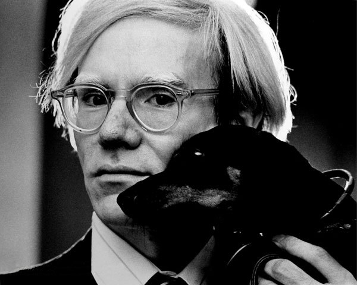

"If you want to know all about Andy Warhol, just look at the surface of my paintings and films and me, and there I am. There's nothing behind it." -Andy Warhol.
Muerte
Warhol murió en Nueva York a las 6:32 de la mañana del 22 de febrero de 1987. Según los noticiarios, se estaba recuperando sin dificultades de una operación de vesícula en el New York Hospital cuando falleció dormido debido a una repentina arritmia post-operatoria. También se ha señalado cierto exceso de líquidos por intoxicación de agua.22 Antes de su diagnóstico y la operación consiguiente, Warhol había intentado retrasar los reconocimientos, debido sobre todo a su miedo a los hospitales y los médicos.
El cuerpo de Warhol fue devuelto por sus hermanos a Pittsburgh para el funeral. El velatorio tuvo lugar en el Thomas P. Kunsak Funeral Home y fue una ceremonia corpore insepulto. El féretro era una pieza de bronce macizo, con adornos dorados y soportes blancos. Warhol llevaba puesto un traje negro de cachemira, una corbata de estampado también de cachemira, una peluca plateada y sus características gafas de sol. Tenía en las manos un pequeño breviario y una rosa roja. El funeral se celebró en la iglesia católica bizantina del Espíritu Santo, en el North Side de Pittsburgh. Monseñor Peter Tray pronunció su encomio. Yōko Ono también se presentó. El féretro quedó cubierto por rosas blancas y brotes de esparraguera. Tras la liturgia, el féretro fue llevado al cementerio católico bizantino de San Juan Bautista, en Bethel Park (un barrio apartado al sur de Pittsburgh). Allí el sacerdote pronunció una breve oración y asperjó con agua bendita el ataúd. Antes de proceder al descenso del mismo, Paige Powell dejó caer un ejemplar de "Interview", una camiseta de la misma revista y una botella del perfume Beautiful, de Estée Lauder. Warhol fue enterrado junto a su madre y su padre, y unas semanas más tarde23 se repitió un oficio conmemorativo para Warhol en Manhattan. El testamento de Warhol legaba toda su propiedad —con excepción de algunos modestos detalles— a miembros de su familia, con el fin de crear una fundación dedicada al «avance de las artes visuales». Warhol tenía tantas posesiones que Sotheby's necesitó nueve días para subastar sus bienes tras su muerte, y la suma total excedía los 20 millones de dólares. Su riqueza total era aún mayor, debido principalmente a astutas inversiones realizadas a lo largo de toda su vida.